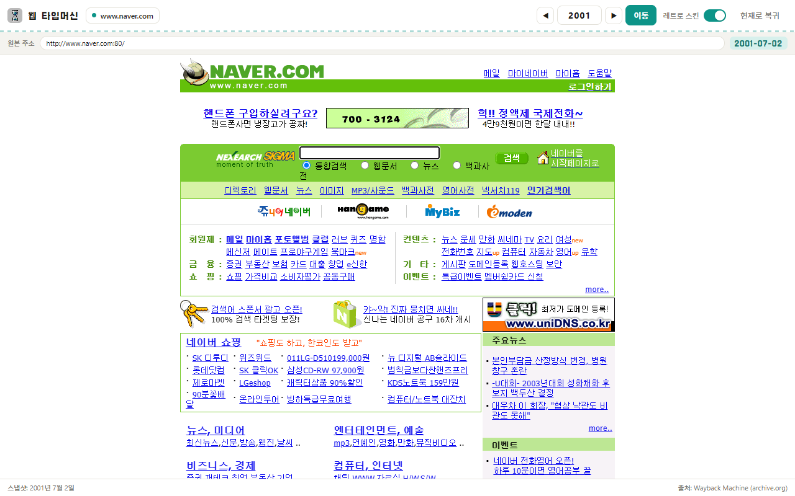

지금 보고 있는 웹사이트를 1999년, 2005년… 그 시절 모습으로 되돌립니다.
Wayback Machine 아카이브 기반 크롬 확장.

실제 확장 프로그램 화면. 연도만 바꾸면 같은 사이트의 다른 시대로 이동합니다.
팝업에서 연도(1996~현재)를 고르면 Wayback Machine이 그 시점의 가장 가까운 스냅샷을 찾아 보여줍니다.
아카이브 페이지에 윈도우95풍 스크롤바·버튼·입력창 스킨을 입힙니다. 켜고 끄기 자유.
버튼 한 번이면 원래의 현재 페이지로 돌아갑니다. 주소창에는 원래 사이트 주소가 표시됩니다.
git clone)chrome://extensions 입력 후 이동합니다.